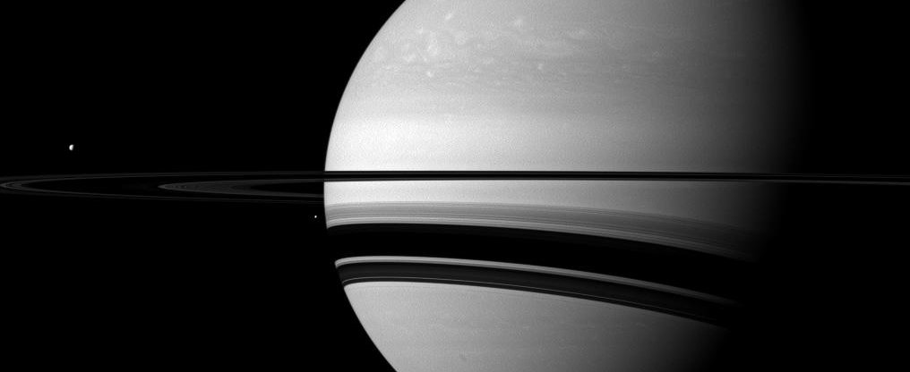
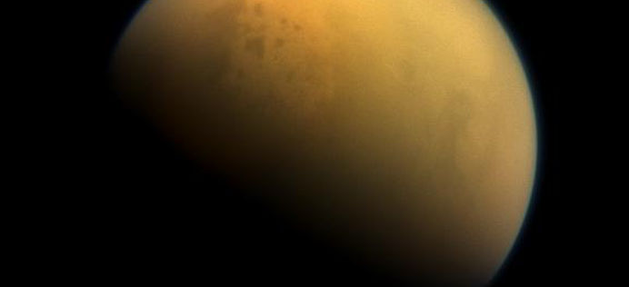
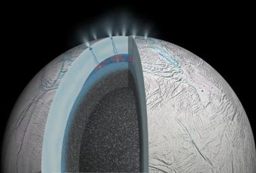

Saturn's Moons


At a Glance
Saturn, the sixth planet from the sun, is home to a vast array of intriguing and unique worlds. From the cloud-shrouded surface of Titan to crater-riddled Phoebe, each of Saturn's moons tells another piece of the story surrounding the Saturn system. Saturn has about 62 known moons, most notably Titan, Rhea, and Enceladus.
Titan

Profile
- Mass: 7.35 X 10^16 million kg (0.0123 x Earth)
- Diameter: 10,917 km
- Equatorial Circumference: 38,025 km
- Average Orbit Distance (from Earth): 384,400 km
- Orbit Period: 27.3 Earth days
- Surface Temperature: -233 to 123 °C
5 Fascinating Facts about Titan
- If the sun were as tall as a typical front door, the moon would the size of a green pea.
- The moon is Earth's satellite and orbits the Earth at a distance of about 384 thousand km (239 thousand miles) or 0.00257 AU.
- The moon makes a complete orbit around Earth in 27 Earth days and rotates or spins at that same rate, or in that same amount of time. This causes the moon to keep the same side or face towards Earth during the course of its orbit.
- The moon is a rocky, solid-surface body, with much of its surface cratered and pitted from impacts.
- The moon has a very thin and tenuous (weak) atmosphere, called an exosphere.
- The moon has no moons.
- The moon has no rings.
- More than 100 spacecraft have been launched to explore the moon. It is the only celestial body beyond Earth that has been visited by human beings (The Apollo Program).
- The moon's weak atmosphere and its lack of liquid water cannot support life as we know it.
- Surface features that create the face known as the "Man in the moon" are impact basins on the moon that are filled with dark basalt rocks.
Medium-sized Moons
Profile
- Mass: 7.35 X 10^16 million kg (0.0123 x Earth)
- Diameter: 10,917 km
- Equatorial Circumference: 38,025 km
- Average Orbit Distance (from Earth): 384,400 km
- Orbit Period: 27.3 Earth days
- Surface Temperature: -233 to 123 °C

Enceladus
- Mass: 7.35 X 10^16 million kg (0.0123 x Earth)
- Diameter: 10,917 km
- Equatorial Circumference: 38,025 km
- Average Orbit Distance (from Earth): 384,400 km
- Orbit Period: 27.3 Earth days
- Surface Temperature: -233 to 123 °C
Small-sized Moons
Profile
- Mass: 7.35 X 10^16 million kg (0.0123 x Earth)
- Diameter: 10,917 km
- Equatorial Circumference: 38,025 km
- Average Orbit Distance (from Earth): 384,400 km
- Orbit Period: 27.3 Earth days
- Surface Temperature: -233 to 123 °C